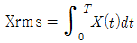
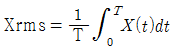
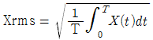
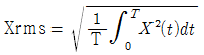
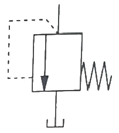
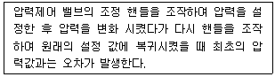
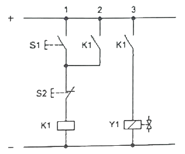

설비보전기사(구) (2019-03-03 기출문제)
1과목: 설비 진단 및 계측
1. 순수한 정현파의 실효값 계산식으로 옳은 것은?




(정답률: 81%)

2. 코일간의 전자유도 현상을 이용한 것으로서 발신기와 수신기로 구성되어 있으며, 회전각도 변위를 전기신호로 변환하여 회전체를 검출하는 수신기는?
- 싱크로(synchro)
- 리졸버(resolver)
- 퍼텐쇼미터(potentiometer)
- 앱솔루트 인코더(absolute encoder)
(정답률: 69%)
3. 다음 중 진동 측정 시 주의해야 할 사항으로 가장 거리가 먼 것은?
- 항상 같은 회전수 일 때 측정한다.
- 항상 같은 시간에 진동을 측정한다.
- 항상 같은 부하조건일 때 측정해야 한다.
- 항상 동일한 지점에서 진동을 측정해야 한다.
(정답률: 82%)
4. 음(소음)의 발생과 특성에 관한 분류 중 옳은 것은?
- 난류음 : 타악기, 스피커음
- 맥동음 : 압축기, 진공펌프, 엔진 배기음
- 일차 고체음 : 기계 본체의 진동에 의한 소리
- 이차 고체음 : 기계의 진동에 지반 진동을 수반하여 발생하는 소리
(정답률: 80%)
5. 다음 가속도 센서 부착 방법 중 먼지, 습기, 온도의 영향이 적어 장기적 안전성이 좋고, 진동 측정 주파수 범위가 넓은 부착 방법은?
- 손 고정
- 나사 고정
- 밀랍 고정
- 마그네틱 고정
(정답률: 85%)
6. 가동되는 펌프에서 유체가 임펠러를 통과할 때 기포가 발생하여 불규칙한 고주파 진동 및 소음이 발생하는 현상은?
- 서징(surging)
- 오일 휠(oil whirl)
- 캐비테이션(cavitation)
- 수격현상(water hammering)
(정답률: 83%)
7. 다음 중 진동 측정 단위로 적당하지 않은 것은?
- m
- m/s
- m/s2
- m2/s2
(정답률: 79%)
8. 프로세스 제어계에서 제어량을 검출부에서 검지하여 조절부에 가하는 신호를 무엇이라고 하는가?
- SV(Setting Value)
- PV(Process Variable)
- DV(Differential Variable)
- MV(Manipulate Variable)
(정답률: 82%)
9. 다음 중 음원에서 모든 방향으로 동일한 에너지를 방출할 때 발생하는 음파는?
- 구면파
- 평면파
- 발산파
- 진행파
(정답률: 73%)
10. 설비의 제1차 건강진단 기술로서 현장 작업원이 주로 사용하는 진단 기술은?
- 간이진단기술
- 성능 정량화 기술
- 고장 검출 해석기술
- 스트레스 정량화 기술
(정답률: 88%)
11. 다음 중 진동의 전달경로 차단방법과 가장 거리가 먼 것은?
- 진동 차단기 설치
- 기초(base)의 진동을 제어하는 방법
- 질량이 큰 경우 거더(girder)의 이용
- 언밸런스(unbalance)의 양을 크게 하는 방법
(정답률: 86%)
12. 다음 중 면적식 유량계의 특징으로 틀린 것은?
- 압력 손실이 적다.
- 기체는 측정을 할 수 없다.
- 부식성 유체의 측정이 가능하다.
- 액체 중에 기포가 들어가면 오차가 생기므로 기포 빼기가 필요하다.
(정답률: 66%)
13. 압력을 측정하기 위한 센서가 아닌 것은?
- 압전형 센서
- 초음파형 센서
- 정전용량형 센서
- 스트레인 게이지형 센서
(정답률: 69%)
14. 다음 중 공기압 신호와 전기 신호의 특징을 나열한 것 중 틀린 것은?
- 전기 신호는 컴퓨터와의 결합성이 좋다.
- 공기압 신호는 전송 시 전달지연이 있다.
- 전기 신호는 전송 시 전달지연이 거의 없다.
- 공기압 신호는 전기 신호에 비해 복잡한 연산을 빨리 처리할 수 있다.
(정답률: 82%)
15. 공장 소음의 측정 조사 항목으로 옳은 것은?
- 소음원 조사 : 소음의 시공간 분석, 소음 평가
- 공장 주변의 환경 조사 : 소음원의 추출, 해석
- 공장 부지 내 소음 조사 : 전파 경로 해석, 소음의 시공간 분석
- 공장 내 소음 조사 : 전파 경로 해석, 소음원 측정위치 평가
(정답률: 61%)
16. 진동이 완전한 1사이클을 하는 동안에 걸린 총시간을 무엇이라 하는가?
- 진동수
- 진동주기
- 각진동수
- 진동위상
(정답률: 85%)
17. 외란이 가해진 후에 계가 스스로 진동하고 있을 때 이 진동을 무엇이라 하는가?
- 공진
- 강제 진동
- 고유 진동
- 자유 진동
(정답률: 76%)
18. 음의 물리적 강약은 음압에 따라 변화하지만 사람이 귀로 듣는 음의 감각적 강약은 음압과 주파수에 따라 변한다. 같은 크기로 느끼는 순음을 주파수별로 구하여 나타낸 것을 무엇이라고 하는가?
- 음압도
- 소음 레벨
- 등청감곡선
- 음향파워레벨
(정답률: 79%)
19. 헬름홀츠(Helmholtz) 공명기에 관한 내용으로 가장 거리가 먼 것은?
- 사이드 브랜치(side branch) 공명기라고도 부른다.
- 헬름홀츠 공명장치는 공진주파수 부근의 소음흡수에는 효과가 적다.
- 헬름홀츠 공명기를 이용한 소음장치는 덕트나 엔진실과 같은 시끄러운 작업장 내부 소음감소에도 이용된다.
- 공진 주파수에서 공명기는 입사소음과 180° 위상차를 갖는 소음을 발생시켜 덕트를 되돌려 보냄으로써 입사소음을 상쇄시킨다.
(정답률: 56%)
20. 다음 설비진단기법 중 오일분석법이 아닌 것은?
- 회전전극법
- 원자흡광법
- 변형게이지법
- 페로그래피법
(정답률: 61%)
2과목: 설비관리
21. 고장, 정지, 성능저하 등을 가져오는 상태를 발견하기 위한 설비의 주기적인 검사로 초기단계에서 이러한 상태를 제거 또는 복구하기 위한 보전은?
- 생산 보전
- 개량 보전
- 예방 보전
- 사후 보전
(정답률: 80%)
22. 소재를 가공해서 희망하는 형상으로 만드는 공작 작업에 사용하는 도구로서 주조, 단조, 절삭 등에 사용하는 것은?
- 공구
- 측정기
- 검사구
- 안전보호구
(정답률: 81%)
23. 다음 설비보전활동 중 필요한 수리, 정비, 개수 등을 위한 제 기능을 수행하며 설비에 투입되는 비용을 최소화하는데 목적을 두고 있는 것은?
- 공사관리
- 부하관리
- 외주관리
- 일정관리
(정답률: 74%)
24. 자주보전의 전개단계 중 제4단계에 해당되는 총점검의 진행방법에 해당되지 않는 것은?
- 작업자에게 전달한다.
- 설비의 기초교육을 받는다.
- 점검수준향상을 위해 체크한다.
- 배운 것을 실천하여 이상을 발견한다.
(정답률: 49%)
25. 설비의 경제성 평가 방법을 설명한 것으로 옳은 것은?
- 신 MAPI 방식 : 연간비용으로서 정액제에 의한 상각비와 평균이자 및 가동비를 취한 방법이다.
- MAPI방식 : 투자순위결정을 위한 긴급도비율(urgency rating)이라는 비율을 도입하는 방법이다.
- 자본 회수법 : 자본배분에 관련된 투자 순위결정이 주제이고, 긴급률이라고 불리는 일종의 수익률을 구하여 이의 대소에 따라서 설비 상호 간의 우선순위를 평가한다.
- 연평균 비교법 : 설비의 내구 사용기간 사이의 자본비용과 가동비의 합을 현재가치로 환산하여 내구사용기간 중의 연평균 비용을 비교하여 대체안을 결정하는 방법이다.
(정답률: 62%)
26. TPM 관리와 전통적 관리를 비교했을 때, 다음 중 TPM 관리의 내용과 가장 거리가 먼 것은?
- Output 지향
- 원인추구 시스템
- 사전활동(예방활동)
- 개선을 위한 자기 동기부여
(정답률: 71%)
27. 다음 중 예방보전의 효과가 아닌 것은?
- 대수리의 감소
- 설비의 정확한 상태파악
- 검사방법과 측정방법의 표준
- 긴급용 예비기기의 필요성 감소와 자본투자의 감소
(정답률: 58%)
28. 연소 관리에서 연소율을 적당히 유지하기 위해 부하가 과소한 경우 대책으로 옳은 것은?
- 연소실을 크게 한다.
- 연료의 품질을 저하시킨다.
- 이용할 노상면적을 크게 한다.
- 연도를 개조하여 통풍이 잘되게 한다.
(정답률: 55%)
29. 부품의 최적대체법 중 일정기간이 되어도 파손되지 않는 부품만을 신품과 대체하는 방식은?
- 각개대체
- 일제대체
- 개별사전대체
- 최적수리주기 대체
(정답률: 55%)
30. 다음 중 뜻이 있는 기호법의 대표적인 것으로서 항목의 첫 글자나 그 밖의 문자를 기호로 하는 방법은?
- 순번식 기호법
- 기억식 기호법
- 세구분식 기호법
- 삼진분류 기호법
(정답률: 73%)
31. 설비 배치의 형태에서 일명 라인(line)별 배치라고도 하며 공정의 계열에 따라 각 공정에 필요한 기계가 배치되는 형식은?
- 기능별 배치
- 제품별 배치
- 혼합형 배치
- 제품 고정형 배치
(정답률: 66%)
32. 자주보전을 하기 위한 설비에 강한 작업자의 요구능력 중 수리할 수 있는 능력에 해당되지 않는 것은?
- 오버홀 시 보조할 수 있다.
- 부품의 수명을 알고 교환할 수 있다.
- 고장의 원인을 추정하고 긴급처리를 할 수 있다.
- 공장 주변 환경의 중요성을 이해하고, 깨끗하게 청소 할 수 있다.
(정답률: 70%)
33. 다음 중 상비품의 요건으로 틀린 것은?
- 단가가 낮을 것
- 사용량이 적으며 단기간만 사용될 것
- 여러 공정의 부품에 공통적으로 사용될 것
- 보관상(중량, 체적, 변질 등) 지장이 없을 것
(정답률: 76%)
34. 설비 동작의 신뢰성은 고유의 신뢰성과 사용 신뢰성으로 구분할 수 있다. 다음 중 사용의 신뢰성에 해당되는 것은?
- 설계 기술
- 보전 기술
- 제조 기술
- 부품 재표의 성질 상태
(정답률: 65%)
35. 다음 중 초기고장기에 발생하는 고장의 원인이 아닌 것은?
- 설계상의 오류
- 부적정한 설치
- 제조과정의 실수
- 열화에 의한 고장
(정답률: 76%)
36. 신뢰성의 평가 척도 중 고장률(failure)을 나타낸 것은?
- 고장률 = 고장횟수 / 총 가동시간
- 고장률 = 고장 정지 시간 / 총 가동시간
- 고장률 = 고장횟수 / 부하시간
- 고장률 = 고장 정지 시간 / 부하시간
(정답률: 51%)
37. 설비배치의 목적이 아닌 것은?
- 생산량 증가
- 우량품 제조
- 생산 원가 증대
- 공간의 경제적 사용
(정답률: 77%)
38. 품질보전의 전개순서 중 요인해석(연쇄요인 규명, 불량요인 정리)을 위한 도구에 해당하지 않는 것은?
- FMECA
- PM 분석
- 특성요인도 분석
- 경제성 분석
(정답률: 63%)
39. 설비 투자 결정에서 발생되는 기본문제의 고려사항이 아닌 것은?
- 대상은 수익 수준에 큰 차이가 없는 조건인 설비교체에 사용한다.
- 자금의 시간적 가치는 현재의 자금이 미래 자금보다 가치가 높아야 한다.
- 미래의 불확실한 현금수익을 비교적 명백한 현금지출에 관련시켜 평가한다.
- 투자의 경제적 분석에 있어서 미래의 기대액은 그 금액과 상응되는 현재의 가치로 환산되어야 한다.
(정답률: 58%)
40. 시스템의 탄생에서부터 사멸에 이르기까지의 라이프 사이클은 4단계로 나누어 볼 수 있다. 다음 중 1단계에 해당하는 것은?
- 제작, 설치
- 운용, 유지
- 시스템의 설계, 개발
- 시스템의 개념 구성과 규격 결정
(정답률: 70%)
3과목: 기계일반 및 기계보전
41. 드릴가공을 하였거나 주조품으로 이미 구멍이 뚫려 있는 경우, 구멍 내부를 확대하여 정확한 치수로 가공하는 작업은?
- 탭 작업
- 보링 작업
- 셰이퍼 작업
- 플레이너 가공 작업
(정답률: 75%)
42. 다음 베어링 중 외륜 궤도면의 한쪽 궤도 홈턱을 제거하여 베어링 요소의 분리 조립을 쉽게 하도록 한 베어링으로, 접촉각이 작아 깊은 홈 베어링 보다 부하 하중을 적게 받는 베어링은?
- 앵귤러 볼 베어링
- 마그네토 볼 베어링
- 스러스트 볼 베어링
- 자동 조심 볼 베어링
(정답률: 53%)
43. 매너키컬 실(mechanical seal)을 선정할 때 주의사항으로 가장 거리가 먼 것은?
- 밀봉면에 작용하는 밀봉력을 유지할 것
- 누유 방지를 위해 탈착이 불가능할 것
- 밀봉 단면의 평형, 평면 상태를 유지할 것
- 밀봉면 사이에 윤활 유체의 기화를 방지할 것
(정답률: 77%)
44. 펌프가 운전이 되고 있으나 물이 처음에는 나오다가 곧 나오지 않을 때 원인으로 적절하지 않은 것은?
- 웨어링이 마모되었다.
- 마중물이 충분하지 못하다.
- 흡입양정이 지나치게 높다.
- 배관 불량으로 흡입관내에 에어 포켓이 생겼다.
(정답률: 67%)
45. 일반적인 줄 작업의 주의사항으로 틀린 것은?
- 보통 줄의 사용 순서는 중목→황목→세목→유목의 순으로 작업한다.
- 오른손 팔꿈치를 옆구리 밀착시키고 팔꿈치가 줄과 수평이 되게 한다.
- 눈은 항상 가공물을 보며 작업하고 줄을 당길 때는 가공물에 압력을 주지 않는다.
- 왼손은 줄의 균형을 유지하기 위해 손목을 수평으로 하고 손바닥으로 줄 끝을 가볍게 누르거나 손가락으로 감싸준다.
(정답률: 75%)
46. 일반적으로 베어링을 열박음으로 장착할 때 몇 ℃ 이상으로 가열하면 베어링의 경도가 저하되는가?
- 20
- 80
- 100
- 130
(정답률: 67%)
47. 미끄럼을 방지하기 위하여 안쪽 표면에 이가 있는 벨트로서, 정확한 속도가 요구되는 경우에 사용되는 전동벨트는?
- V 벨트
- 평 벨트
- 체인 벨트
- 타이밍 벨트
(정답률: 73%)
48. 스퍼기어의 제도 시 요목표 기입 사항이 아닌 것은?
- 잇수
- 치형
- 압력각
- 비틀림각
(정답률: 56%)
49. 일반적인 용접의 특징으로 틀린 것은?
- 용접사의 기량에 따라 용접부의 품질이 좌우된다.
- 재료 두께의 제한이 있고 이종 재료의 용접이 어렵다.
- 용접 준비 및 작업이 비교적 간단하고 용접의 자동화가 용이하다.
- 소음이 적어 실내에서 작업이 가능하며 복잡한 구조물 제작이 쉽다.
(정답률: 65%)
50. 관(pipe)의 플랜지 이음에 대한 설명으로 틀린 것은?
- 유체의 압력이 높은 경우 사용된다.
- 관의 지름이 비교적 큰 경우 사용된다.
- 가끔 분해, 조립할 필요가 있을 때 편리하다.
- 저압용일 경우 구리, 납, 연강 등을 사용한다.
(정답률: 71%)
51. 다음 메카니컬 실의 종류 중 스터핑 박스의 내측에 회전링을 설치하는 밀봉으로 유체의 누설 압력이 실의 외부에서 내부로 작용하며, 내류형이라고도 하는 것은?
- 더블형
- 탠덤형
- 인사이드형
- 아웃사이드형
(정답률: 74%)
52. 신뢰도와 보전도를 종합한 평가 척도로 어느 특정 순간에 기능을 유지하고 있는 확률을 무엇이라고 하는가?
- 용이성
- 유용성
- 보전성
- 신뢰성
(정답률: 57%)
53. 다음 중 전동기 기동불능 현상의 원인이 아닌 것은?
- 단선
- 기계적 과부하
- 서머릴레이 작동
- 코일 절연물의 열화
(정답률: 49%)
54. 너트의 풀림 방지용으로 사용되는 와셔로 적당하지 않은 것은?
- 사각 와셔
- 이붙이 와셔
- 스프링 와셔
- 혀붙이 와셔
(정답률: 68%)
55. 일반적인 고주파 담금질의 특징으로 틀린 것은?
- 직접 가열하므로 열효율이 높다.
- 열처리 불량이 적고 변형 보정을 필요로 하지 않는다.
- 가열 시간이 길어서 경화면의 탈탄이나 산화가 많이 발생한다.
- 직접 부분 담금질이 가능하므로 필요한 깊이만큼 균일하게 경화된다.
(정답률: 61%)
56. 다음 중 브레이크의 용량 결정과 관련된 사항으로 가장 거리가 먼 것은?
- 마찰계수
- 마찰면적
- 브레이크의 중량
- 브레이크 패드의 압력
(정답률: 75%)
57. 압축공기 배관의 누설점검 방법 및 조치방법으로 적당하지 않은 것은?
- 배관이음부는 비눗물을 칠하여 거품의 여부를 본다.
- 공장 휴업 시 조용한 실내에서 공기누설 소리를 체크한다.
- 밸브 나사 부위에 누설이 생겼을 경우 그 부위만 더 조인다.
- 나사관의 경우 효과적인 보전을 위해 유니온 이음쇠를 적당히 배치한다.
(정답률: 75%)
58. 윔기어 감속기에서 윔휠의 이닿기 면을 윔의 중심에서 출구 쪽으로 약간 어긋나게 하는 이유로 가장 적합한 것은?
- 감속비를 높이기 위하여
- 백래쉬를 없애기 위하여
- 접촉각을 조정하기 위하여
- 윤활유의 공급이 잘 되게 하기 위하여
(정답률: 74%)
59. 아베의 원리를 만족하는 측정기는?
- 블록 게이지
- 하이트 게이지
- 버니어 캘리퍼스
- 외측 마이크로미터
(정답률: 61%)
60. 공기 압축기 부속품 중 공압 밸브의 올바른 조립방법이 아닌 것은?
- 밸브 시트 패킹은 반드시 조립하여 넣는다.
- 밸브의 조립순서의 불량은 밸브 고장의 원인이 된다.
- 밸브의 고정 볼트는 기밀유지를 위해 각 볼트마다 서로 다른 토크값으로 잠근다.
- 밸브의 홀더 볼트의 영구고착을 방지하기 위해 나사부에 몰리브덴 방지제를 도포한다.
(정답률: 80%)
4과목: 윤활관리
61. 기어용 윤활유의 요구 조건에 관한 내용으로 틀린 것은?
- 방식, 방청성이 우수해야 한다.
- 고속 기어에는 저점도의 윤활유가 적합하다.
- 기어의 회전에 따라 기포가 발생하면 윤활 성능이 증대되므로 소포성이 낮은 윤활유가 요구된다.
- 윤활유에 수분이 침투하여 유화가 발생되면 녹이 발생하므로 항유화성의 윤활유가 요구된다.
(정답률: 60%)
62. 윤활관리를 효율적으로 수행하기 위한 방법으로 틀린 것은?
- 급유작업자를 위한 급유의 순서와 경로 등의 계획을 세운다.
- 각 윤활개소의 윤활유와 그리스는 교체하지 않고 지속적으로 사용한다.
- 윤활부분의 이상 점검, 윤활제 공급 작업 및 윤활보전작업의 실행 확인을 위한 기록을 한다.
- 공장 내에서 사용되는 윤활제 종류를 최소화하며 구매 및 재고관리 업무의 효율성을 향상시킨다.
(정답률: 78%)
63. 베어링 윤활의 목적이 아닌 것은?
- 마찰열의 방출
- 피로 수명의 감소
- 마찰 및 마모의 감소
- 베어링 내부에 이물질의 침입 방지
(정답률: 59%)
64. 윤활유를 규정조건으로 가열하여 발생한 증기에 불꽃을 접근시켰을 때 순간적으로 불이 붙은 온도를 무엇이라고 하는가?
- 주도점
- 적하점
- 인화점
- 유동점
(정답률: 78%)
65. 다음 중 윤활을 실시하는 부서의 직무와 가장 거리가 먼 것은?
- 표준 적유량 결정
- 급유장치의 예비품 관리
- 윤활대장 및 각종기록 작성
- 윤활제 선정 및 소비량 관리
(정답률: 51%)
66. 윤활유를 분류할 때 석유계 윤활유에 속하지 않는 것은?
- 혼합계
- 파라핀계
- 나프텐계
- 동식물계
(정답률: 75%)
67. 윤활유의 점도와 온도의 관계를 지수로 나타내는 실험값으로 옳은 것은?
- 색
- 유동점
- 점도지수
- 인화점 및 연소점
(정답률: 72%)
68. 윤활유의 열화 원인으로 맞지 않는 것은?
- 질화 현상
- 산화 현상
- 유화 현상
- 탄화 현상
(정답률: 56%)
69. 그리스를 장기간 사용하지 않고 방치해 놓거나, 사용과정에서 그리스를 구성하고 있는 기름이 분리되는 현상을 무엇이라고 하는가?
- 주도
- 적하점
- 증발량
- 이유도
(정답률: 75%)
70. 다음 중 윤활관리의 목적과 가장 거리가 먼 것은?
- 설비 수명 연장
- 윤활비용 감소
- 고장도수율 증대
- 설비 가동율 증대
(정답률: 74%)
71. 윤활관리의 기본적 효과로 틀린 것은?
- 윤활사고의 방지
- 윤활비용의 증가
- 보수 유지비의 절감
- 기계정도와 기능의 유지
(정답률: 77%)
72. 윤활계통의 운전과 보전활동 중 플러싱 실시 시기가 아닌 것은?
- 윤활유 보충 시 실시한다.
- 윤활제 교환 시 실시한다.
- 윤할계의 검사 시 실시한다.
- 기계 장치의 신설 시 실시한다.
(정답률: 69%)
73. 고압 고속으로 회전하는 베어링에 윤활유를 펌프를 이용해 강제적으로 밀어 공급하는 방법으로, 내연기관, 고속의 비행기, 자동차 엔진, 증기터빈 및 공작기계 등에 사용되는 윤활방법으로 가장 적합한 것은?
- 체인 급유법
- 칼라 급유법
- 사이펀 급유법
- 강제 순환 급유법
(정답률: 77%)
74. 산화에 의하여 금속 표면에 붙어 있는 슬러지나 탄소 성분을 녹여 기름 중의 미세한 입자 상태로 분산시켜 내부를 깨끗이 유지하는 역할을 하는 윤활제의 첨가제는?
- 소포제
- 청정 분산제
- 유성 향상제
- 유동점 강하제
(정답률: 70%)
75. 유압 작동유에 필요한 성질이 아닌 것은?
- 산화안정성이 좋아야 한다.
- 마모방지성이 좋아야 한다.
- 부식 방지성 및 방청성을 가져야 한다.
- 온도변화에 따른 점도의 변화가 커야 한다.
(정답률: 80%)
76. 다음 그리스 중 120~232℃ 정도의 적점을 지니고 있으며, 섬유구조로 안정성이 높아 고온특성은 좋은 편이지만, 내수성이 나쁜 특성을 가진 것은?
- 칼슘 그리스
- 바륨 그리스
- 나트륨 그리스
- 알루미늄 그리스
(정답률: 64%)
77. 윤활유 SOAP 분석방법 중 플라즈마를 이용하여 분석하는 방식은?
- ICP 법
- 회전전극법
- 원자흡광법
- 페로그래피법
(정답률: 54%)
78. 미끄럼 베어링 급유법에 대한 설명으로 틀린 것은?
- 전손식은 적하 급유, 원심 급유법 등에서 쓰인다.
- 전손식은 운전속도가 빠를 때 주로 적용된다.
- 유욕식은 링 급유, 체인 급유, 컬러 급유, 비말 급유 등의 방법이 있다.
- 순환식은 베어링의 온도가 높아져 온도를 내리고자 할 경우에 적용된다.
(정답률: 57%)
79. 액상 윤활유가 갖추어야 할 성질로 틀린 것은?
- 산화나 열에 대한 안정성이 낮을 것
- 사용상태에서 충분한 점도를 가질 것
- 화학적으로 불활성이며 청정, 균질할 것
- 한계 윤활상태에서 견딜 수 있는 유성이 있을 것
(정답률: 70%)
80. 다음 윤활제의 작용 중 내연기관의 피스톤과 실린더 벽 사이에 윤활유막이 존재함으로써 연소가스가 새는 것을 방지해주는 것은?
- 방진 작용
- 마찰 작용
- 밀봉 작용
- 마모 작용
(정답률: 77%)
5과목: 공유압 및 자동화
81. 일반적으로 유압실린더에서 좌굴 하중을 고려한 안전계수는?
- 0.5 ~ 1
- 1.5 ~ 2
- 2.5 ~ 3.5
- 7 ~ 10
(정답률: 60%)
82. 핸들링(handling)에서 생산 작업과 관련된 자재나 작업물의 모든 이동기능을 이송이라 한다. 이 이송에 해당되지 않는 것은?
- 취합(merging)
- 계량(metering)
- 분류(ditributing)
- 위치결정(position control)
(정답률: 57%)
83. 유도기전력을 설명한 것으로 틀린 것은?
- 자속밀도에 비례한다.
- 도선의 길이에 비례한다.
- 도선이 움직이는 속도에 비례한다.
- 도체를 자속과 평행으로 움직이면 기전력이 발생한다.
(정답률: 53%)
84. 자동화 시스템의 자동화가 적용되는 분야나 산업별로 구분한 것이 아닌 것은?
- OA(Office Automation)
- HA(Home Automation)
- FA(Factory Automation)
- LCA(Low Cost Automation)
(정답률: 64%)
85. 캐스케이드 회로에 대한 설명으로 틀린 것은?
- 제어에 특수한 장치나 밸브를 사용하지 않고 일반적으로 이용되는 밸브를 사용한다.
- 작동 시퀀스가 복잡하게 되면 제어 그룹의 개수가 많아지게 되어 배선이 복잡하고, 제어회로의 작성도 어렵게 된다.
- 작도에 방향성이 없는 리밋 스위치를 이용하고, 리밋 스위치가 순서에 따라 작동되어야만 제어신호가 출력되기 때문에 높은 신뢰성을 보장할 수 있다.
- 캐스케이드 밸브가 많아지게 되면 제어 에너지의 압력 상승이 발생되어 제어에 걸리는 스위칭 시간이 짧아지는 특징이 있다.
(정답률: 59%)
86. 고무 튜브형 또는 인라인형이라고 하는 어큐물레이터에 대한 설명으로 옳은 것은?
- 대용량형 제작이 용이하다.
- 일정한 온도로 유지시킬 수 있다.
- 스프링 특성상 저압용에 사용된다.
- 배관에 연결하며 맥동방지에 사용된다.
(정답률: 58%)
87. SI 단위계에서 압력을 표시하는 기호는?
- 바(bar)
- 뉴턴(N)
- 와트(W)
- 파스칼(Pa)
(정답률: 64%)
88. 공유압 시스템의 특징에 관한 설명 중 틀린 것은?
- 공압은 환경오염의 우려가 없다.
- 유압은 공압보다 작동속도가 빠르다.
- 유압은 소형장치로 큰 출력을 낼 수 있다.
- 공압은 초기 에너지 생산 비용이 많이 든다.
(정답률: 47%)
89. 유압 모터 중 구조면에서 가장 간단하며 출력토크가 일정하고 정·역회전이 가능하고 토크효율이 약 75~85%, 최저 회전수는 150rpm 정도이며, 정밀 서보 기구에는 부적합한 것은?
- 기어 모터(gear motor)
- 베인 모터(vane motor)
- 액시얼 피스톤 모터(axial piston motor)
- 레디얼 피스톤 모터(radial piston motor)
(정답률: 63%)
90. 공유압의 동력은 무엇을 나타내는가?
- 일
- 거리
- 일률
- 에너지
(정답률: 54%)
91. 다음 압력 제어 밸브 기호의 명칭은?

- 분류 밸브
- 릴리프 밸브
- 무부하 밸브
- 시퀀스 밸브
(정답률: 74%)
92. 다음 설명에 해당되는 특성은?

- 유량 특성
- 릴리프 특성
- 압력 조절 특성
- 히스테리시스 특성
(정답률: 63%)
93. 압축공기의 소모량에 따라 공기 압축기의 운전을 조절하는 방식이 아닌 것은?
- 저속 조절
- 전압 조절
- 무부하 조절
- ON/OFF 조절
(정답률: 49%)
94. 공유압 장치에서 압력 전달에 관한 것을 설명한 원리는?
- 연속 방정식
- 오일러의 법칙
- 파스칼의 법칙
- 베르누이의 법칙
(정답률: 67%)
95. 3상 전동기의 과열 원인으로 적절하지 않은 것은?
- 단상 운전
- 과부하 운전
- 공진 현상 발생
- 코일의 단락 또는 군의 단락
(정답률: 53%)
96. 감압밸브와 릴리프밸브에 대한 설명으로 틀린 것은?
- 감압밸브는 평상 시 열려 있고, 릴리프밸브는 평상 시 닫혀 있다.
- 감압밸브는 출구측 압력에 의해 제어되고, 릴르프밸브는 입구측 압력에 의해 제어된다.
- 릴리프밸브는 출구측에서 입구측으로의 역방향 흐름이 가능하고, 감압밸브는 불가능하다.
- 릴리프밸브는 압력계가 입구측에 설치되어 있고, 감압밸브는 압력계가 출구측에 설치되어 있다.
(정답률: 54%)
97. 예방보전을 위한 현장작업자와 보전담당자의 역할분담으로 가장 적합한 것은?
- 현장작업자는 일상점검, 정기점검 및 수리, 개선보전활동을 하고, 보전담당자는 이상발견 및 보고, 청소급유를 충실히 하여야 한다.
- 현장작업자는 정기점검 및 수리, 개선보전활동을 하고, 보전담당자는 일상점검, 이상발견 및 보고, 청소급유를 충실히 하여야 한다.
- 현장작업자는 개선보전활동, 정기점검 및 수리, 청소급유를 충실히 하고, 보전담당자는 이상발견 및 보고, 일상점검을 하여야 한다.
- 현장작업자는 일상점검, 이상발견 및 보고, 청소급유를 충실히 하고, 보전담당자는 정기점검 및 수리, 개선보전활동을 하여야 한다.
(정답률: 73%)
98. 다음 회로에 대한 설명으로 틀린 것은?

- 리셋(reset)우선 자기유지회로이다.
- 라인 3의 Y1은 솔레노이드 밸브이다.
- 스위치 S1은 자기유지회로를 구성하기 위한 셋(set)스위치이다.
- 라인 2와 3의 접점 K1은 동일한 릴레이의 동일한 접점으로 할 수 없다.
(정답률: 67%)
99. 제어 동작이 출력 상태와 무관하게 이루어지는 제어시스템으로써 제어 장치로 구성된 각 기기들은 자기에게 정해진 작업만을 수행하며 외란에 의한 오차에 대처할 능력이 없는 제어 방식은?
- 디지털 제어(Digital Control)
- 아날로그 제어(Analog Control)
- 오픈 루프 제어(Open Loop Control)
- 클로즈 루프 제어(Closed Loop Control)
(정답률: 55%)
100. 어떤 목적에 적합하도록 되어 있는 대상에 필요한 조작을 가하는 것을 무엇이라 하는가?
- 제어
- 시스템
- 자동하
- 신호처리
(정답률: 76%)